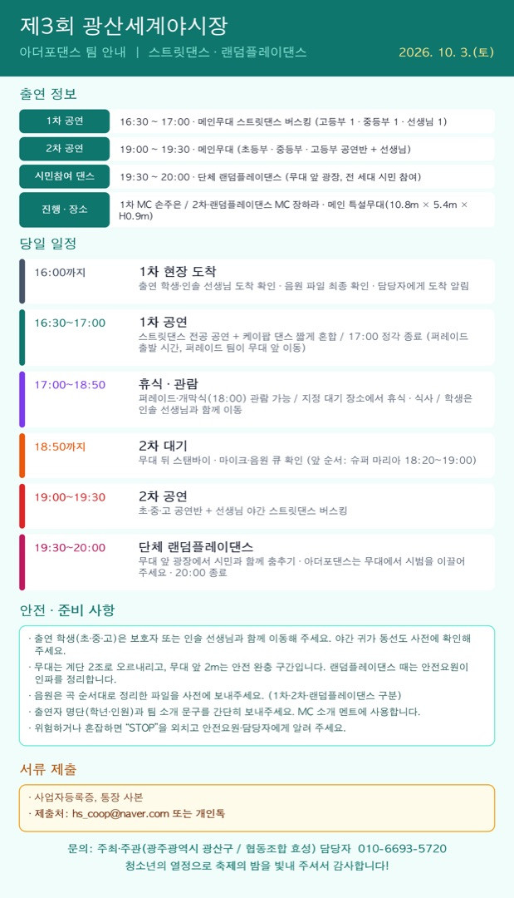

출연팀
아더포댄스
16:30 1차 · 19:00 2차 · 19:30 랜덤플레이댄스

이미지를 누르면 크게 볼 수 있고, 길게 눌러 저장할 수 있습니다.
아더포댄스(ARDOR FOR DANCE) 팀은 올해 축제에서 두 차례 스트릿댄스 공연과 시민 참여 랜덤플레이댄스를 맡아 주십니다.
10월 3일(토) 일정과 준비 사항을 안내드립니다. (첨부 이미지 참고)
출연 정보
- 1차 공연: 16:30 ~ 17:00 · 메인무대 스트릿댄스 버스킹 (고등부 1, 중등부 1, 선생님 1)
- 2차 공연: 19:00 ~ 19:30 · 메인무대 (초등부, 중등부, 고등부 공연반 + 선생님)
- 단체 랜덤플레이댄스: 19:30 ~ 20:00 · 무대 앞 광장 (전 세대 시민 참여)
- 진행: 1차 MC 손주은 / 2차·랜덤플레이댄스 MC 장하라
- 장소: 광산구 월곡동 목련로 메인 특설무대 (10.8m × 5.4m × H0.9m, 계단 2조)
- 구성: 스트릿댄스 전공 공연 중심, 케이팝 댄스를 짧게 혼합
당일 일정
- 16:00까지 1차 현장 도착 → 출연 학생·인솔 선생님 도착 확인, 음원 파일 최종 확인, 담당자에게 도착 알림
- 16:30~17:00 1차 공연 (17:00 정각 종료 — 17:00은 퍼레이드 출발 시간으로 퍼레이드 팀이 무대 앞으로 이동합니다.)
- 17:00~18:50 휴식·관람: 퍼레이드와 개막식(18:00) 관람 가능. 지정 대기 장소에서 휴식·식사 (학생은 인솔 선생님과 함께 이동)
- 18:50까지 2차 대기: 무대 뒤 스탠바이, 마이크·음원 큐 확인 (앞 순서: 슈퍼 마리아 18:20~19:00)
- 19:00~19:30 2차 공연 (초·중·고 공연반 + 선생님 야간 스트릿댄스 버스킹)
- 19:30~20:00 단체 랜덤플레이댄스: 무대 앞 광장에서 시민과 함께 춤추며, 아더포댄스는 무대에서 시범을 이끌어 주세요. 20:00 종료 후 DJ 춘디 EDM 파티로 이어집니다.
안전·준비 사항
- 출연 학생(초·중·고)은 보호자 또는 인솔 선생님과 함께 이동해 주세요. 야간 귀가 동선도 사전에 확인해 주세요.
- 무대는 계단 2조로 오르내리고, 무대 앞 2m는 안전 완충 구간입니다. 랜덤플레이댄스 때는 안전요원이 인파를 정리합니다.
- 음원은 곡 순서대로 정리한 파일을 사전에 보내주세요. (1차·2차·랜덤플레이댄스 구분)
- 출연자 명단(학년·인원)과 팀 소개 문구를 간단히 보내주세요. MC 소개 멘트에 사용합니다.
- 위험하거나 혼잡하면 “STOP”을 외치고 안전요원·담당자에게 알려 주세요.